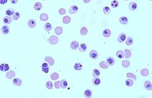

Ferdig Lab Home Page
Malaria takes an enormous toll on the poorest regions of the world with the most lethal malaria species, Plasmodium falciparum, responsible for up to 500 million clinical cases and nearly a half-million deaths annually. Malaria continues to thrive in many regions around the world, largely due to the continuous emergence and spread of drug resistance. The new ‘genomics’ era promised a pipeline to new discoveries; however, breakthroughs in disease control have been slow to come. The Ferdig lab is building a foundation of approaches to leverage whole-genome information for new attacks against the malaria parasite.
Our approach is built on a few key early observations: 1) Drug resistance is best understood not as a simple single gene mechanism, because even major drug resistance genes function in the context of other genes, i.e. as we like to say, “background matters”; 2) Extensive relationships exist among malaria parasite drug susceptibilities and growth rates that reflect genome-wide co-adaptive processes; 3) Natural genetic variability, as displayed by genetic crosses and outbred populations, provides valuable views of co-adapted systems. My lab continues to develop the tools and computational framework to reveal and mine the genetic architecture of complex traits. Our quantitative trait locus (QTL) mapping approach combined with the power of genomic information and associated tools is well-suited for discovery of key gene interactions, a crucial component of emerging artemisinin resistance (Art-R).